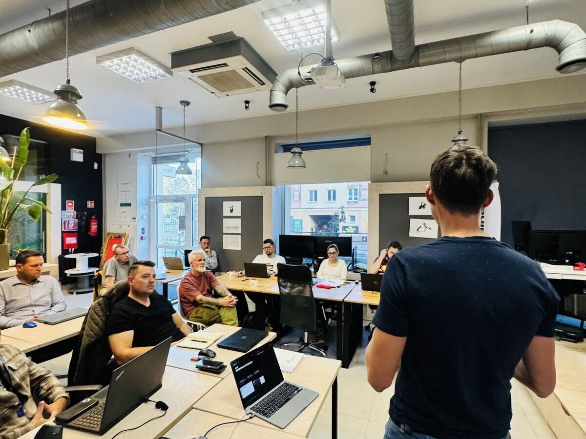
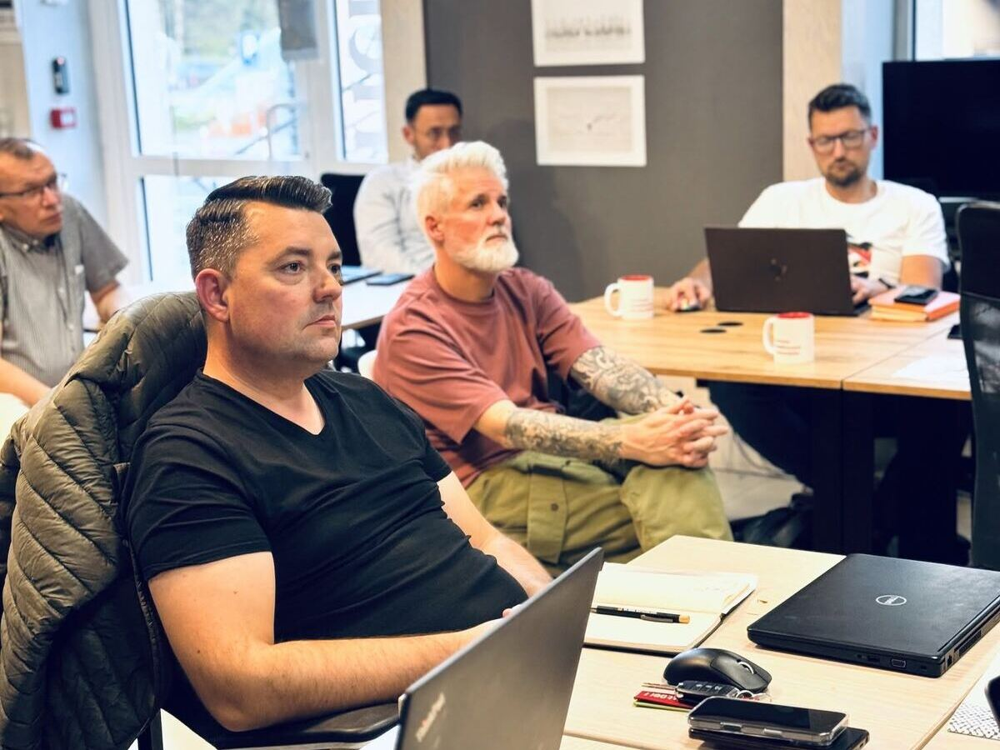
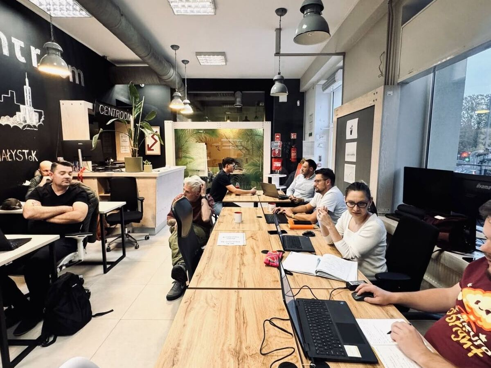
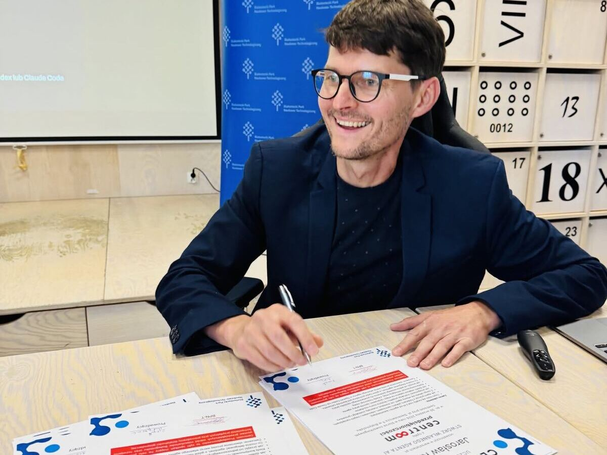

Miejsca wyprzedały się w jeden dzień. Na sali spotkali się naukowcy, prawnicy, inżynier i menedżerowie. Łączyło ich jedno: chcieli sprawdzić, czy agent AI potrafi wykonać prawdziwą pracę, a nie tylko dobrze odpowiadać w oknie czatu.

Za mną szkolenie „AI dla menedżerów: od czatu do agenta AI” w Białostockim Parku Naukowo-Technologicznym. Przez dwie godziny przeszliśmy od podstaw do pracy na własnych plikach uczestników.
12 osób. 60 minut teorii. 60 minut praktyki. Średnia ocen w ankiecie BPNT: 5/5.
To nie była sala pełna programistów
Na szkolenie przyszli doświadczeni ludzie z bardzo różnych środowisk:
- naukowcy z Uniwersytetu Medycznego w Białymstoku,
- właściciele kancelarii prawno-podatkowej,
- inżynier projektujący data center dla Microsoftu,
- dyrektor marketingu jednej z największych firm na Podlasiu,
- analityk internetowy pracujący dla firmy z USA.
Każdy przyszedł z laptopem i kontem Claude albo OpenAI. Nikt nie przyszedł tylko posłuchać. Od początku założenie było proste: teoria ma prowadzić do samodzielnego wykonania zadania.

Najpierw różnica między czatem a agentem
Pierwszą godzinę poświęciliśmy na fundamenty. Czym właściwie jest agent? Co odróżnia go od czatu? Gdzie kończy się dobre polecenie, a zaczyna proces, który można wykonać i sprawdzić?
Sprowadzam to do prostego wzoru:
Model + cel + kontekst + narzędzia = agent.
Czat odpowiada. Agent wykonuje pracę. Żeby jednak zrobił ją dobrze, potrzebuje nie tylko modelu, ale także jasno opisanego celu, materiałów, dostępu do odpowiednich narzędzi i kryteriów oceny wyniku.
Potem praca na własnych plikach
Druga godzina była praktyczna. Uczestnicy pracowali na swoich laptopach i materiałach, które znali ze swojej codziennej pracy. Dzięki temu od razu mogli ocenić, czy wynik jest użyteczny, czego brakuje i gdzie człowiek powinien zatrzymać proces do kontroli.
W programie znalazły się między innymi:
- przejście od czatu do agenta,
- elementy dobrze zbudowanego agenta,
- różnica między agentem a tradycyjnym oprogramowaniem,
- obsługa aplikacji przez MCP, wtyczki i API,
- przejście od pojedynczego polecenia do skilla i automatyzacji,
- tworzenie stron internetowych i baz wiedzy z pomocą agentów,
- pokaz na żywo i samodzielne ćwiczenie.

Najważniejszy efekt pojawił się po szkoleniu
Najbardziej cieszą mnie nie same deklaracje, tylko sytuacje, w których uczestnik następnego dnia naprawdę używa nowej wiedzy.
„Przeszedłem całe Google Umiejętności Jutra, i to dosyć rzetelnie. Dopiero u Ciebie zrozumiałem istotę agentów i różnicę między nimi a czatowaniem.” — Tomek
Druga wiadomość przyszła od Bartka:
„Dzisiaj już skorzystałem na tej wiedzy, bo aktualizowałem slajdy na zajęcia w szkole doktorskiej. Nie chciało mi się tego robić manualnie 🤣” — Bartek
To jest dla mnie najlepszy test szkolenia: uczestnik nie tylko rozumie pojęcie, ale potrafi następnego dnia zastosować je przy konkretnym zadaniu.

Oceny 5/5 i jedna ważna uwaga
W ankiecie BPNT każda ocena wyniosła 5/5. W komentarzach pojawiły się między innymi takie odpowiedzi:
„Super mega warsztat, przyjdę ponownie, nawet jak będzie taki sam :)”
„Najmocniejsze: praktyczne zastosowanie. Nie było słabych stron.”
Dostałem też informację, że zadania były za łatwe. To akurat uwaga, którą warto potraktować serio. Grupa poradziła sobie lepiej, niż zakładałem, dlatego w kolejnej edycji podniosę poprzeczkę: więcej pracy na procesach uczestników, mniej gotowych ćwiczeń i trudniejsze kryteria oceny wyniku.
Następny krok: cały dzień
Na sali był dyrektor marketingu jednej z największych firm na Podlasiu. Po warsztacie dostałem zaproszenie do przeprowadzenia całodniowego szkolenia dla jego zespołu.

Dziękuję BPNT i wszystkim uczestnikom. To spotkanie potwierdziło mi jedną rzecz: kiedy szkolenie zaczyna się od prawdziwego procesu i własnych materiałów, agent AI przestaje być ciekawostką. Staje się narzędziem do wykonania konkretnej pracy.
Jeżeli chcesz przeprowadzić podobne szkolenie dla swojego zespołu, umów krótką rozmowę. Program dopasujemy do procesów i materiałów, z którymi naprawdę pracujecie.